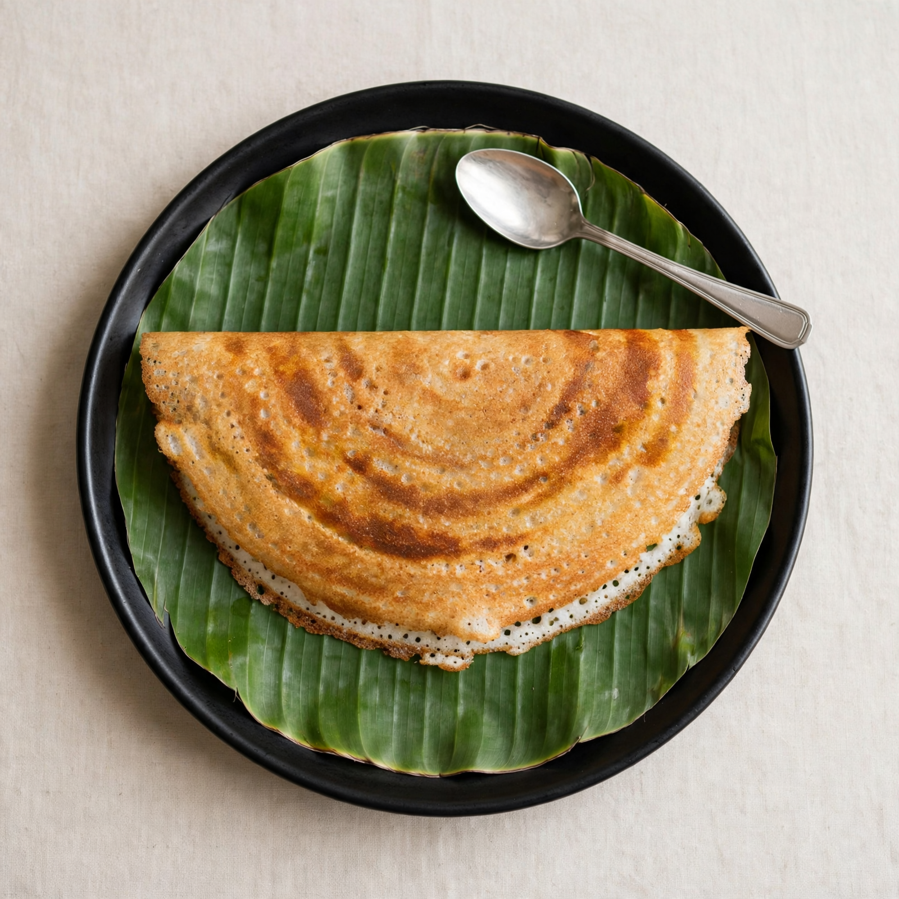
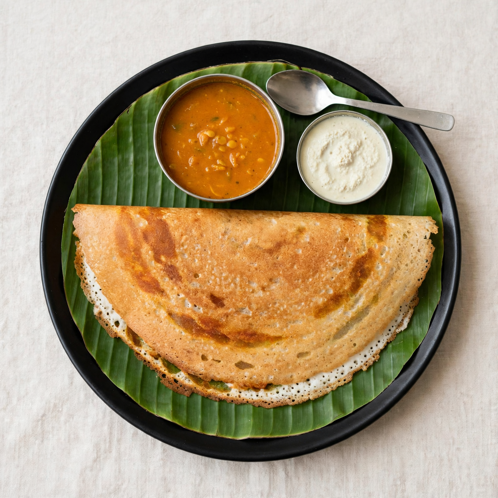

When it gets it wrong
Rava dosa, Bengaluru: rejected twice, then approved
 real plate
real plate1 dosa · sambar bowl · chutney bowl · spoon

rejectedmissing sambar · missing coconut chutney

rejectedmissing spoon
 passed
passedNothing invented, nothing missing.
The auditor's reason becomes the next prompt. No pass in 3 rounds means no photo.